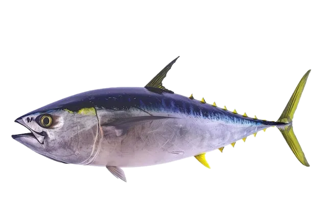

Ocean Sprinter
Tuna
Tuna traverse entire ocean basins, powering through currents with hydrodynamic bodies built for speed. Their migrations knit together ecosystems and cultures that rely on their remarkable journeys.
Interesting Facts
- Unlike most fish, tuna are partially warm-blooded, allowing them to maintain muscle efficiency in cold waters.
- Bluefin tuna can accelerate faster than a sports car, reaching speeds over 40 miles per hour.
- Satellite tagging shows individuals crossing the Atlantic multiple times a year to feed and spawn.
